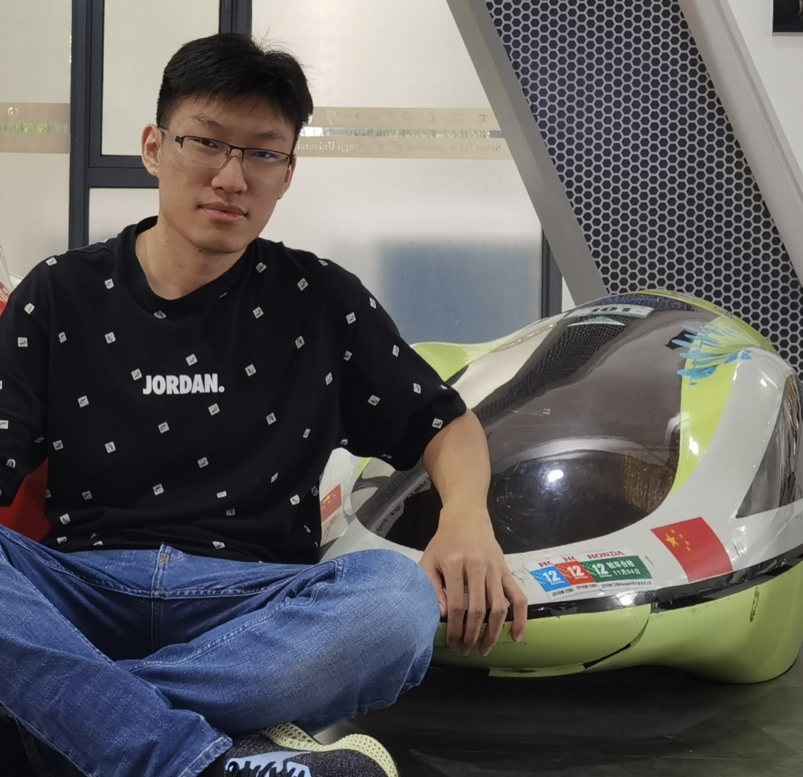

Ziang Cao
Ph.D student
Nanyang Technological University
CV
SocialInterests
Deep learning, Robotics, Computer vision.
About me
Ziang Cao is currently a first-year PhD student in the College of Computer and Data Science in Nanyang Technological Unviersity, with MMLab@NTU, supervised by Prof. Ziwei Liu. His research interests lie on the computer vision, deep learning, and 3D generation.
News
News
[Sep. 2025] One paper (PhysX-3D) is accepted by NeurIPS 2025 as Spotlight.
[Feb. 2025] One paper (3DTopia-XL) is accepted by CVPR2025 as Highlight.
[May. 2024] One paper (DiffTF++) is accepted by TPAMI.
[Jan. 2024] One paper (DiffTF) is accepted by ICLR.
[Aug. 2023] One paper (TCTrack++ ) is accepted by TPAMI.
[Mar. 2022] Two papers (TCTrack and EgoPAT3D) are accepted by CVPR2022.
[Feb. 2022] One paper is accepted by RA-L2022.
[Feb. 2022] One paper is accepted by ICRA2022.
[Aug. 2021] One paper (HiFT) is accepted by ICCV2021.
[July. 2021] Two papers (SiamAPN++ and DarkLighter ) are accepted by IROS2021.
[May. 2021] One paper is accepted by TGRS.
[Feb. 2021] One paper is accepted by ICRA2021.
Publications

PhysX-3D: Physical-Grounded 3D Asset Generation
Ziang Cao, Zhaoxi Chen, Liang Pan, Ziwei Liu. NeurIPS.
3D modeling is moving from virtual to physical. Existing 3D generation primarily emphasizes geometries and textures while neglecting physical-grounded modeling. Consequently, despite the rapid development of 3D generative models, the synthesized 3D assets often overlook rich and important physical properties, hampering their real-world application in physical domains like simulation and embodied AI. As an initial attempt to address this challenge, we propose \textbf{PhysX-3D}, an end-to-end paradigm for physical-grounded 3D asset generation. 1) To bridge the critical gap in physics-annotated 3D datasets, we present PhysXNet - the first physics-grounded 3D dataset systematically annotated across five foundational dimensions: absolute scale, material, affordance, kinematics, and function description. In particular, we devise a scalable human-in-the-loop annotation pipeline based on vision-language models, which enables efficient creation of physics-first assets from raw 3D assets.2) Furthermore, we propose \textbf{PhysXGen}, a feed-forward framework for physics-grounded image-to-3D asset generation, injecting physical knowledge into the pre-trained 3D structural space. Specifically, PhysXGen employs a dual-branch architecture to explicitly model the latent correlations between 3D structures and physical properties, thereby producing 3D assets with plausible physical predictions while preserving the native geometry quality. Extensive experiments validate the superior performance and promising generalization capability of our framework. All the code, data, and models will be released to facilitate future research in generative physical AI.
Publications
PhysX-3D: Physical-Grounded 3D Asset Generation
Ziang Cao, Zhaoxi Chen, Liang Pan, Ziwei Liu. NeurIPS.
3D modeling is moving from virtual to physical. Existing 3D generation primarily emphasizes geometries and textures while neglecting physical-grounded modeling. Consequently, despite the rapid development of 3D generative models, the synthesized 3D assets often overlook rich and important physical properties, hampering their real-world application in physical domains like simulation and embodied AI. As an initial attempt to address this challenge, we propose \textbf{PhysX-3D}, an end-to-end paradigm for physical-grounded 3D asset generation. 1) To bridge the critical gap in physics-annotated 3D datasets, we present PhysXNet - the first physics-grounded 3D dataset systematically annotated across five foundational dimensions: absolute scale, material, affordance, kinematics, and function description. In particular, we devise a scalable human-in-the-loop annotation pipeline based on vision-language models, which enables efficient creation of physics-first assets from raw 3D assets.2) Furthermore, we propose \textbf{PhysXGen}, a feed-forward framework for physics-grounded image-to-3D asset generation, injecting physical knowledge into the pre-trained 3D structural space. Specifically, PhysXGen employs a dual-branch architecture to explicitly model the latent correlations between 3D structures and physical properties, thereby producing 3D assets with plausible physical predictions while preserving the native geometry quality. Extensive experiments validate the superior performance and promising generalization capability of our framework. All the code, data, and models will be released to facilitate future research in generative physical AI.
3DTopia-XL: Scaling High-quality 3D Asset Generation via Primitive Diffusion
Zhaoxi Chen, Jiaxiang Tang, Yuhao Dong, Ziang Cao, Fangzhou Hong, Yushi Lan, Tengfei Wang, Haozhe Xie, Tong Wu, Shunsuke Saito, Liang Pan, Dahua Lin, Ziwei Liu. CVPR.
The increasing demand for high-quality 3D assets across various industries necessitates efficient and automated 3D content creation. Despite recent advancements in 3D generative models, existing methods still face challenges with optimization speed, geometric fidelity, and the lack of assets for physically based rendering (PBR). In this paper, we introduce 3DTopia-XL, a scalable native 3D generative model designed to overcome these limitations. 3DTopia-XL leverages a novel primitive-based 3D representation, PrimX, which encodes detailed shape, albedo, and material field into a compact tensorial format, facilitating the modeling of high-resolution geometry with PBR assets. On top of the novel representation, we propose a generative framework based on Diffusion Transformer (DiT), which comprises 1) Primitive Patch Compression, 2) and Latent Primitive Diffusion. 3DTopia-XL learns to generate high-quality 3D assets from textual or visual inputs. We conduct extensive qualitative and quantitative experiments to demonstrate that 3DTopia-XL significantly outperforms existing methods in generating high-quality 3D assets with fine-grained textures and materials, efficiently bridging the quality gap between generative models and real-world applications.
DiffTF++: 3D-aware Diffusion Transformer for Large-Vocabulary 3D Generation
Ziang Cao, Fangzhou Hong, Tong Wu, Liang Pan, Ziwei Liu. TPAMI.
Generating diverse and high-quality 3D assets automatically poses a fundamental yet challenging task in 3D computer vision. Despite extensive efforts in 3D generation, existing optimization-based approaches struggle to produce large-scale 3D assets efficiently. Meanwhile, feed-forward methods often focus on generating only a single category or a few categories, limiting their generalizability. Therefore, we introduce a diffusion-based feed-forward framework to address these challenges with a single model. To handle the large diversity and complexity in geometry and texture across categories efficiently, we 1) adopt improved triplane to guarantee efficiency; 2) introduce the 3D-aware transformer to aggregate the generalized 3D knowledge with specialized 3D features; and 3) devise the 3D-aware encoder/decoder to enhance the generalized 3D knowledge. Building upon our 3D-aware Diffusion model with TransFormer, DiffTF, we propose a stronger version for 3D generation, i.e., DiffTF++. It boils down to two parts: multi-view reconstruction loss and triplane refinement. Specifically, we utilize multi-view reconstruction loss to fine-tune the diffusion model and triplane decoder, thereby avoiding the negative influence caused by reconstruction errors and improving texture synthesis. By eliminating the mismatch between the two stages, the generative performance is enhanced, especially in texture. Additionally, a 3D-aware refinement process is introduced to filter out artifacts and refine triplanes, resulting in the generation of more intricate and reasonable details. Extensive experiments on ShapeNet and OmniObject3D convincingly demonstrate the effectiveness of our proposed modules and the state-of-the-art 3D object generation performance with large diversity, rich semantics, and high quality.
Large-Vocabulary 3D Diffusion Model with Transformer
Ziang Cao, Fangzhou Hong, Tong Wu, Liang Pan, Ziwei Liu. ICLR.
Creating diverse and high-quality 3D assets with an automatic generative model is highly desirable. Despite extensive efforts on 3D generation, most existing works focus on the generation of a single category or a few categories. In this paper, we introduce a diffusion-based feed-forward framework for synthesizing massive categories of real-world 3D objects with a single generative model. Notably, there are three major challenges for this large-vocabulary 3D generation: a) the need for expressive yet efficient 3D representation; b) large diversity in geometry and texture across categories; c) complexity in the appearances of real-world objects. To this end, we propose a novel triplane-based 3D-aware Diffusion model with TransFormer, DiffTF, for handling challenges via three aspects. 1) Considering efficiency and robustness, we adopt a revised triplane representation and improve the fitting speed and accuracy. 2) To handle the drastic variations in geometry and texture, we regard the features of all 3D objects as a combination of generalized 3D knowledge and specialized 3D features. To extract generalized 3D knowledge from diverse categories, we propose a novel 3D-aware transformer with shared cross-plane attention. It learns the cross-plane relations across different planes and aggregates the generalized 3D knowledge with specialized 3D features. 3) In addition, we devise the 3D-aware encoder/decoder to enhance the generalized 3D knowledge in the encoded triplanes for handling categories with complex appearances. Extensive experiments on ShapeNet and OmniObject3D (over 200 diverse real-world categories) convincingly demonstrate that a single DiffTF model achieves state-of-the-art large-vocabulary 3D object generation performance with large diversity, rich semantics, and high quality. Our project page: https:// ziangcao0312.github.io/difftf_pages/.
Towards Real-World Visual Tracking with Temporal Contexts
Ziang Cao, Ziyuan Huang, Liang Pan, Shiwei Zhang, Ziwei Liu, Changhong Fu. TPAMI.
Visual tracking has made significant improvements in the past few decades. Most existing state-of-the-art trackers 1) merely aim for performance in ideal conditions while overlooking the real-world conditions; 2) adopt the tracking-by-detection paradigm, neglecting rich temporal contexts; 3) only integrate the temporal information into the template, where temporal contexts among consecutive frames are far from being fully utilized. To handle those problems, we propose a two-level framework (TCTrack) that can exploit temporal contexts efficiently. Based on it, we propose a stronger version for real-world visual tracking, i.e., TCTrack++. It boils down to two levels: features and similarity maps. Specifically, for feature extraction, we propose an attention-based temporally adaptive convolution to enhance the spatial features using temporal information, which is achieved by dynamically calibrating the convolution weights. For similarity map refinement, we introduce an adaptive temporal transformer to encode the temporal knowledge efficiently and decode it for the accurate refinement of the similarity map. To further improve the performance, we additionally introduce a curriculum learning strategy. Also, we adopt online evaluation to measure performance in real-world conditions. Exhaustive experiments on 8 wellknown benchmarks demonstrate the superiority of TCTrack++. Real-world tests directly verify that TCTrack++ can be readily used in real-world applications.
Egocentric Prediction of Action Target in 3D
Yiming Li*,Ziang Cao*, Andrew Liang, Benjamin Liang, Luoyao Chen, Hang Zhao, Chen Feng. CVPR2022, * denotes equal contribution.
We are interested in anticipating as early as possible the target location of a person's object manipulation action in a 3D workspace from egocentric vision. It is important in fields like human-robot collaboration, but has not yet received enough attention from vision and learning communities. To stimulate more research on this challenging egocentric vision task, we propose a large multi-modal dataset of more than 1 million frames of RGBD and IMU streams, and provide evaluation metrics based on our high-quality 2D and 3D labels from semi-automatic annotation. Meanwhile, we design baseline methods using recurrent neural networks (RNNs) and conduct various ablation studies to validate their effectiveness. Our results demonstrate that this new task is worthy of further study by researchers in robotics, vision, and learning communities.
TCTrack: Temporal Contexts for Aerial Tracking
Ziang Cao, Ziyuan Huang, Liang Pan, Shiwei Zhang, Ziwei Liu, Changhong Fu. CVPR2022.
Temporal contexts among consecutive frames are far from being fully utilized in existing visual trackers. In this work, we present TCTrack, a comprehensive framework to fully exploit temporal contexts for aerial tracking. The temporal contexts are incorporated at \textbf{two levels}: the extraction of \textbf{features} and the refinement of \textbf{similarity maps}. Specifically, for feature extraction, an online temporally adaptive convolution is proposed to enhance the spatial features using temporal information, which is achieved by dynamically calibrating the convolution weights according to the previous frames. For similarity map refinement, we propose an adaptive temporal transformer, which first effectively encodes temporal knowledge in a memory-efficient way, before the temporal knowledge is decoded for accurate adjustment of the similarity map. TCTrack is effective and efficient: evaluation on four aerial tracking benchmarks shows its impressive performance; real-world UAV tests show its high speed of over 27 FPS on NVIDIA Jetson AGX Xavier.
HiFT: Hierarchical Feature Transformer for Aerial Tracking
Ziang Cao, Changhong Fu, Junjie Ye, Bowen Li, Yiming Li. ICCV2021.
Most existing Siamese-based tracking methods execute the classification and regression of the target object based on the similarity maps. However, they either employ a single map from the last convolutional layer which degrades the localization accuracy in complex scenarios or separately use multiple maps for decision making, introducing intractable computations for aerial mobile platforms. Thus, in this work, we propose an efficient and effective hierarchical feature transformer (HiFT) for aerial tracking. Hierarchical similarity maps generated by multi-level convolutional layers are fed into the feature transformer to achieve the interactive fusion of spatial (shallow layers) and semantics cues (deep layers). Consequently, not only the global contextual information can be raised, facilitating the target search, but also our end-to-end architecture with the transformer can efficiently learn the interdependencies among multi-level features, thereby discovering a tracking-tailored feature space with strong discriminability. Comprehensive evaluations on four aerial benchmarks have proven the effectiveness of HiFT. Real-world tests on the aerial platform have strongly validated its practicability with a real-time speed. Our code is available at https://github.com/vision4robotics/HiFT.
SiamAPN++: Siamese Attentional Aggregation Network for Real-Time UAV Tracking
Ziang Cao, Changhong Fu, Junjie Ye, Bowen Li, Yiming Li. IROS2021.
Recently, the Siamese-based method has stood out from multitudinous tracking methods owing to its state-of-the-art (SOTA) performance. Nevertheless, due to various special challenges in UAV tracking, \textit{e.g.}, severe occlusion, and fast motion, most existing Siamese-based trackers hardly combine superior performance with high efficiency. To this concern, in this paper, a novel attentional Siamese tracker (SiamAPN++) is proposed for real-time UAV tracking. By virtue of the attention mechanism, the attentional aggregation network (AAN) is conducted with self-AAN and cross-AAN, raising the expression ability of features eventually. The former AAN aggregates and models the self-semantic interdependencies of the single feature map via spatial and channel dimensions. The latter aims to aggregate the cross-interdependencies of different semantic features including the location information of anchors. In addition, the dual features version of the anchor proposal network is proposed to raise the robustness of proposing anchors, increasing the perception ability to objects with various scales. Experiments on two well-known authoritative benchmarks are conducted, where SiamAPN++ outperforms its baseline SiamAPN and other SOTA trackers. Besides, real-world tests onboard a typical embedded platform demonstrate that SiamAPN++ achieves promising tracking results with real-time speed.
Onboard Real-Time Aerial Tracking With Efficient Siamese Anchor Proposal Network
Changhong Fu, Ziang Cao, Yiming Li, Junjie Ye, Chen Feng. TGRS.
Object tracking approaches based on the Siamese network have demonstrated their huge potential in the remote sensing field recently. Nevertheless, due to the limited computing resource of aerial platforms and special challenges in aerial tracking, most existing Siamese-based methods can hardly meet the real-time and state-of-the-art performance simultaneously. Consequently, a novel Siamese-based method is proposed in this work for onboard real-time aerial tracking, i.e., SiamAPN. The proposed method is a no-prior two-stage method, i.e., Stage-1 for proposing adaptive anchors to enhance the ability of object perception and Stage-2 for fine-tuning the proposed anchors to obtain accurate results. Distinct from the traditional predefined anchors, the proposed anchors can adapt automatically to the tracking object. Besides, the internal information of adaptive anchors is utilized to feedback SiamAPN for enhancing the object perception. Attributing to the feature fusion network, different semantic information is integrated, enriching the information flow that is significant for robust aerial tracking. In the end, the regression and multiclassification operation refine the proposed anchors meticulously. Comprehensive evaluations on three well-known aerial tracking benchmarks have proven the superior performance of the presented approach. Moreover, to verify the practicability of the proposed method, SiamAPN is implemented onboard a typical embedded aerial tracking platform to conduct the real-world evaluations on specific aerial tracking scenarios, e.g., fast motion, long-term tracking, and low resolution. The results have demonstrated the efficiency and accuracy of the proposed approach, with a processing speed of over 30 frames/s. In addition, the image sequences in the real-world evaluations are collected and annotated as a new aerial tracking benchmark, i.e., UAVTrack112.
Siamese Anchor Proposal Network for High-Speed Aerial Tracking
Changhong Fu, Ziang Cao, Yiming Li, Junjie Ye, Chen Feng. ICRA2021.
In the domain of visual tracking, most deep learning-based trackers highlight the accuracy but casting aside efficiency. Therefore, their real-world deployment on mobile platforms like the unmanned aerial vehicle (UAV) is impeded. In this work, a novel two-stage Siamese network-based method is proposed for aerial tracking, i.e., stage-1 for high-quality anchor proposal generation, stage-2 for refining the anchor proposal. Different from anchor-based methods with numerous pre-defined fixed-sized anchors, our no-prior method can 1) increase the robustness and generalization to different objects with various sizes, especially to small, occluded, and fast-moving objects, under complex scenarios in light of the adaptive anchor generation, 2) make calculation feasible due to the substantial decrease of anchor numbers. In addition, compared to anchor-free methods, our framework has better performance owing to refinement at stage-2. Comprehensive experiments on three benchmarks have proven the superior performance of our approach, with a speed of ∼200 frames/s.
DarkLighter: Light Up the Darkness for UAV Tracking
Junjie Ye, Changhong Fu, Guangze Zheng, Ziang Cao,, Bowen Li. IROS2021.
Recent years have witnessed the fast evolution and promising performance of the convolutional neural network (CNN)-based trackers, which aim at imitating biological visual systems. However, current CNN-based trackers can hardly generalize well to low-light scenes that are commonly lacked in the existing training set. In indistinguishable night scenarios frequently encountered in unmanned aerial vehicle (UAV) tracking-based applications, the robustness of the state-of-the-art (SOTA) trackers drops significantly. To facilitate aerial tracking in the dark through a general fashion, this work proposes a low-light image enhancer namely DarkLighter, which dedicates to alleviate the impact of poor illumination and noise iteratively. A lightweight map estimation network, i.e., ME-Net, is trained to efficiently estimate illumination maps and noise maps jointly. Experiments are conducted with several SOTA trackers on numerous UAV dark tracking scenes. Exhaustive evaluations demonstrate the reliability and universality of DarkLighter, with high efficiency. Moreover, DarkLighter has further been implemented on a typical UAV system. Real-world tests at night scenes have verified its practicability and dependability.
Education & Experiences
Education & Experiences
[Sep. 2017-Jun. 2022] Tonji University , Vehicle Engineering, Shanghai, China.
[Jun. 2017-Feb. 2023] Shanghai Artificial Intelligence Laboratory , Shanghai, China.
[Feb. 2023-Present] Nanyang Technological University , Singapore.